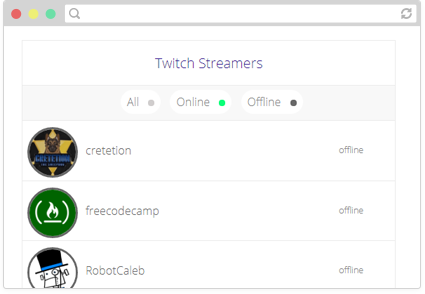

Front end developer from the land of
It’s my pleasure to introduce myself...
I'm Ahmed Ameen Abouhay, I'm well versed in many skills around technology & product development. I like to build things – usually with technology, and a side of grit. I love knowledge, and I strongly believe technology can, and should enrich every single life this universe has to offer.
Work
